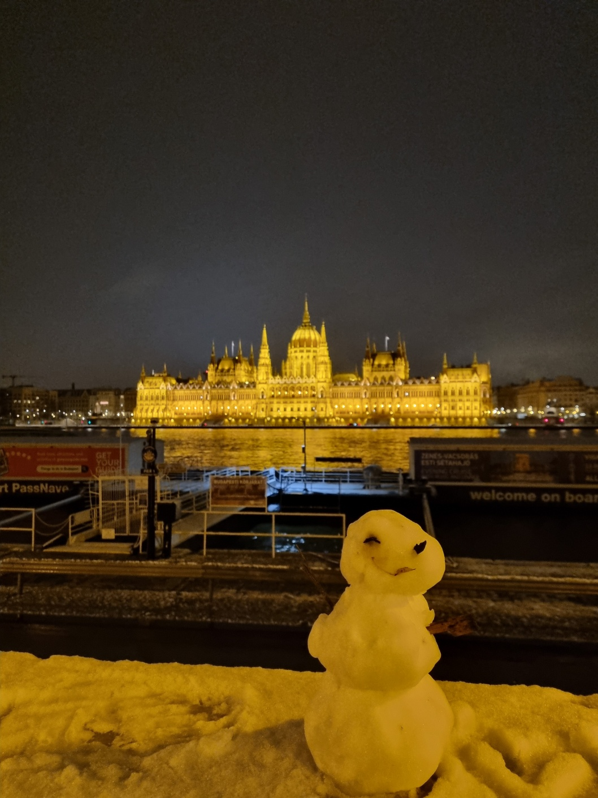
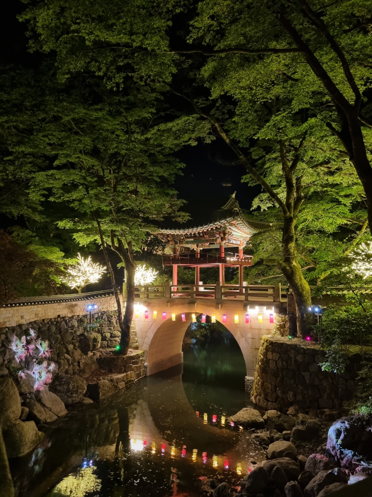

아마도 부다페스트의 국회의사당...?
포착된 순간순간의 추억을 만나보세요.

아마도 부다페스트의 국회의사당...?

멧돼지를 조심하세요.

호주의 11월은 초여름이랍니다. 산 위쪽이라 바람도 많이 불고 생각보다 많이 추웠답니다.

헝가리는 크리스마스 마켓은 매우 유명하죠... 하지만 크리스마스 당일에는 닫는답니다.🤪

안타깝게도 여름의 해운대를 아직 가보지 못했답니다.

헝가리의 대표적인 요리로, 먹어본 사람들 모두 육개장과 비슷한 맛이라고 말합니다. 추운 겨울에 알맞는 뜨끈한 국물 요리~

섬나라라 역시 피쉬앤칩스가 맛있네요. 뻔하지만 추천합니다. 이름은 기억안나는데 페리타고 섬 넘어가서 먹으면 꿀맛~

간단하게 먹기에는 햄버거가 짱. 각 나라의 맥도날드 방문 기원🙏